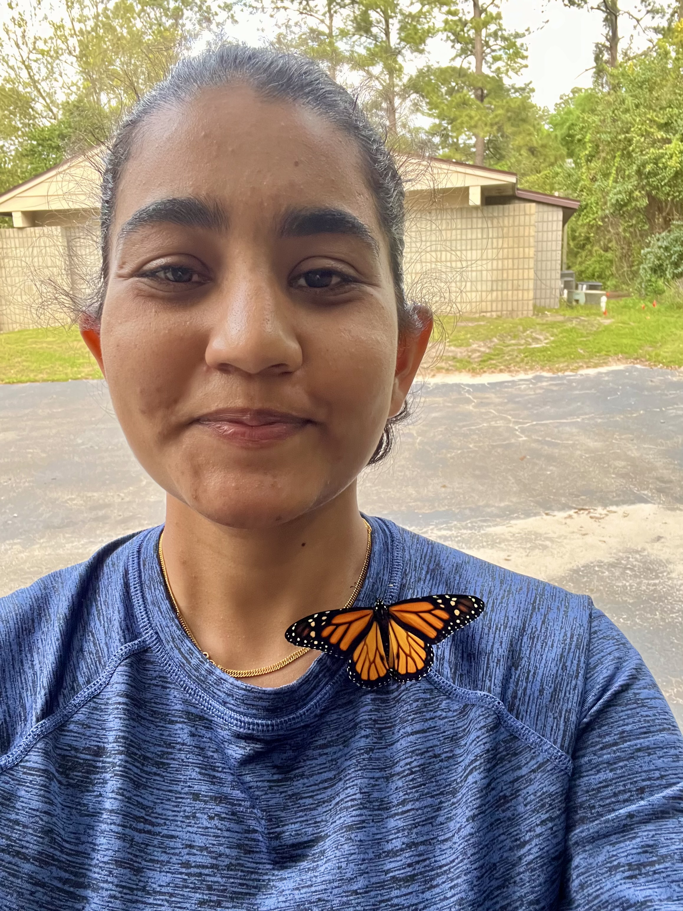

Principal Investigator

Vaughn M. Shirey, Ph.D.
(any/all/no pronouns) | Pronunciation: Von Shy-ree
I am broadly interested in using natural history collections, fieldwork, and participatory science data to answer questions about how global change processes shape lepidopteran biodiversity on our
planet. I am also invested in actioning science in the conservation sphere to address global challenges in biodiversity conservation, sustainability, and resilience.
Outside of research, I enjoy explorations of alternative process photography; Western esotericism, queer theory, and psychology; indie, punk, hyperpop, and techno music; and cooking vegan cuisines. I hail from Philadelphia originally with my bengal cat, Sheikh.
I take a very non-traditional approach to my pedagogy, mentorship, and science, focusing on theories of leadership, individuation, and creativity. I believe a scientist can be anyone at any time.
Education and Training
- David H. Smith Postdoctoral Conservation Research Fellow | University of Southern California and University of Florida
- Ph.D. in Biology | Georgetown University
- B.S. in Environmental Science | Drexel University
Team Members

Chelsea Skojec, Ph.D.,
Postdoctoral Researcher
Research: Urbanization effects on Saturniidae distributions and morphology.
Education and Training:
- Ph.D. in Biology | University of Florida
- Bachelor's of Sustainability Science | University of Florida
My previous research focused on the evolution of complex traits used in anti-predatory defenses. I used an integrated approach of phylogenetics, genomics, and neural networks to provide a better understanding of these traits and their evolution.
My current research will build on my previous work, using genetics, neural networks, and machine learning to better understand the ecology of saturniids, to better understand movement, life history, and inform conservation practices.
Outside of academia I spend time playing the drums, and visiting friends and family back home in New York where I'm originally from.

Sajan KC,
Ph.D. Student (Entomology)
Research: Updated giant skipper (Hespieriidae: Megathymina) field descriptions, distribution records, natural histories, and status assessments.
Education and Training:
- MS in Biology | Eastern New Mexico University
- BS in Agriculture Science | Tribhuvan University, Nepal
Entomologist specializing in butterflies (Lepidoptera: Papilionoidea), with a particular fondness for skippers (Hesperiidae), specifically the Giant Skippers (Megathymina).
I want to illuminate the phylogenetic relationships, habitat preferences, natural histories, ecological roles, population trends under climate change, and conservation status
of skippers. I like to employ a multidisciplinary approach, integrating systematics, ecology, evolution, and conservation biology to decipher the intricate dynamics of skipper
species and populations. To promote public engagement and species identification, I develop identification keys based on external morphology. Although my primary focus is on
Lepidoptera, I have also studied Coleoptera (Mycteridae and Coccinellidae) and Odonata in the past. Outside of research, I love traveling to new places while capturing pictures
of butterflies through macro-photography and expanding my 'lifer' list. I also love listening to old songs and staying updated to new technologies.

Anisha Sapkota,
Research Technician
Research: Climate Change, Biodiversity, and Conservation of Butterfly Populations.
Education and Training:
- MS in Biology | Eastern New Mexico University
- BS in Agriculture Science | Agriculture and Forestry University, Nepal
Seven-ish years back, I stumbled upon the fascinating world of insects, and I've been hooked ever since. Exploring the incredible diversity, intricate ecology, and ever-interesting
behavior of these tiny creatures have become my lifelong passion. From exploring national parks in my home country, Nepal, to venturing into the Nearctic and Neotropics, my journey on
knowing 'whats', 'whys' and 'hows' of insects have only deepened. Now, I'm driven to share this wonder with others, inspiring a similar appreciation for the incredible world of insects.
When I'm not obsessively talking about butterflies and insects, I love to paint – paint what you may ask, yes, I paint butterflies!
Lab Alumni
We're new! Stay tuned.